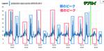
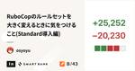
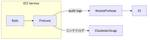
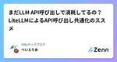
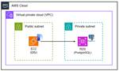

直近1週間の人気フィード
はてなブックマーク数を元に新着優先で並べ替え

Repro で遭遇した Aurora MySQL にまつわるトラブル 5 選 229
229 Repro Tech Blog
Repro Tech Blog
こんにちは、Platform Team の荒引 (@a_bicky) です。前回は続・何でも屋になっている SRE 的なチームから責務を分離するまでの道のり 〜新設チームでオンコール体制を構築するまで〜という話を書いたんですが、今回は Repro の運用に 7 年以上携わる中で私が遭遇して印象的だった Aurora MySQL 絡みのトラブルについて紹介します。 Aurora MySQL が詰まってデータ処理のスループットが下がるとか、API のレスポンスが遅くなるとか、ALTER TABLE する度にアプリケーションエラーが発生するとか、胃が痛くなる胸が熱くなる話が多いので、Aurora M…
2日前
システムをVMからコンテナに移行して、結局VMに戻した話 354 MonotaRO Tech Blog
MonotaRO Tech Blog
こんにちは、モノタロウ コアシステムエンジニアリング部門 配送ドメイングループの安見です。 この記事では私が関わっていた社内システムを仮想サーバ(AWS EC2)からコンテナに移行した後にコンテナをやめて仮想サーバに戻した話をご紹介します。 諸説明 コンテナ移行について コンテナ化対象システムについて 直面した様々な問題 リリース後の多数の残課題 展開する機能の数が多すぎる コンテナ化のメリットが薄かった なぜこうなったか よかったこと まとめ 追記： 現在なら... 諸説明 コンテナ移行について システムのコンテナ移行とは、アプリケーションやサービスを動作させるための必要なすべての環境を、一…
3日前
主キーサイズの違いによるPostgreSQLの検索性能の違いを比較する 60 ドワンゴ教育サービス開発者ブログ
ドワンゴ教育サービス開発者ブログ
PostgreSQLのテーブルの主キーのデータサイズによって単体取得のSELECT速度がどのくらい変わるか、実際に計測して比較してみました
1日前
ZOZOMETRYでのマルチテナントシステム設計のアプローチ 〜テナント間分離の変遷〜 31 ZOZO TECH BLOG
ZOZO TECH BLOG
目次 目次 はじめに 我々のチームについて ZOZOMETRYについて ZOZOMETRYでのBtoB開発で取り入れたこと プールモデルによるマルチテナント管理 Cognito+DBによるユーザー情報の管理 RLSによる行単位でのデータアクセス制御 RLSの利用を見送った理由 理由1 : コネクションプールの管理 理由2 : O/RマッパーでのRLSの利用 DDDにおけるテナントのアクセス制御 MySQLを採用した理由 AWS Auroraとの互換性 PostgreSQL独自の機能の不使用 チームの経験と学習コスト 計測プロダクトとの整合性 PostgreSQLを採用したいケース Gitの運用…
1日前
ローカル5G網と公衆モバイル網への接続を切り替え可能なSIMアプレットの開発
21 NTT Communications Engineers' Blog
NTT Communications Engineers' Blog
本記事では、「ローカル5G網への接続と公衆モバイル網への接続を切り替え可能なSIMアプレット」について説明します。 SIMアプレットはSIMカード上に搭載するアプレットです。SIMアプレットとは何か、どのような機能を実装することで技術開発を実現したのかといったことをご紹介します。 目次 目次 はじめに 背景 SIMカード SIMアプレット 動作例 開発環境 SIMアプレットの活用事例 新たなSIMアプレットの開発 動機 開発技術の構成要素: プロファイル切替機能 開発技術の構成要素: エリア判定機能 各切り替え時のシーケンス 開発技術の検証 検証概要 検証結果 バグの修正 課題への対処 発信活…
16時間前
エンジニアと業務スペシャリストとの共創 -給与計算システムでの事例- 19 Visional Engineering Blog
Visional Engineering Blog
はじめまして。HRMOS労務給与プロダクト部でエンジニアをしているgenと申します。 2022年4月に株式会社ビズリーチに中途入社して以降「HRMOS労務給与」の開発を行ってます。 給与計算システムの開発
1日前

RuboCopのルールセットを大きく変えるときに気をつけること（Standard導入編） 19 inSmartBank
inSmartBank
こんにちは osyoyu です。RuboCop は好きですか？ B/43の開発の現場でもRuboCopは活用しており、ご多分に漏れず .rubocop.yml がすくすくと育てられていました。コードの一貫性はよく保たれていた…… のですが、 # rubocop:disable がそれなりの頻度で出現したことからも、適用されているルールが最良のものかは少しばかり疑問があった、という具合です。 そこで、今回は “unconfigurable” をウリにしているRuboCopルールセットであるStandard (standardrb/standard) を採用し、全コードをこのルールに適合するよう修…
1日前
【PostgreSQL】いかにして JSONB を安全に扱うか 99 株式会社ゆめみのフィード
株式会社ゆめみのフィード
はじめにPostgres には JSON/JSONB というデータ型がありますが，JSONB はデータをバイナリ形式で格納するためインサート時に変換のオーバーヘッドがあるものの，その後の処理が非常に高速である上に，インデックスを貼ることができるため，実用上は JSONB を使うのが一般的です．https://www.postgresql.org/docs/17/datatype-json.html一方で，そもそも RDB のようなスキーマの厳格な型付けをしているシステムで半構造化データである JSON を扱うこと自体がアンチパターンであるという指摘もあります．しかしながら，適...
4日前
LangChain公式エキスパートによる『LangChainとLangGraphによるRAG・AIエージェント［実践］入門』発売のお知らせ 35 Generative Agents Tech Blog
Generative Agents Tech Blog
ジェネラティブエージェンツ の 吉田真吾（@yoshidashingo）です。 今年3月に創業して以来、共同創業者3名が毎日会話しながら、ときに開発の手を止めてまで書いていたAIエージェント本(LangChain/LangGraph本)が11/9(土)に技術評論社から発売されます。 gihyo.jp みなさん、もう予約いただけましたか？ Amazonでも予約段階からつねにいずれかのカテゴリーのランキングに入っており、注目度の高さがうかがえます。 LangChainとLangGraphによるRAG・AIエージェント［実践］入門作者:西見 公宏,吉田 真吾,大嶋 勇樹技術評論社Amazon 予定で…
3日前
自動化するLLMシステムの品質管理: LLM-as-a-judge の作り方 35 Gaudiy Tech Blog
Gaudiy Tech Blog
こんにちは。ファンと共に時代を進める、Web3スタートアップ Gaudiy の seya (@sekikazu01)と申します。 LLM-as-a-Judge、名前の通り何かしらの評価にLLMを使う手法です。 LLMは非構造化データでもうまいこと解釈してくれる優れものなため、通常のプログラミングでは判断することが難しいことでも、それらしき判断やスコアをつけてくれます。 本記事ではそんなLLM-as-a-Judgeを、LLMを使ったシステムの振る舞いの改善の確認 and デグレ検知目的で作っていく際の、私なりの流れやTipsなどを紹介していきます。 なぜLLMでJudgeしたいのか？ はじめに「…
3日前

監査ログの保管先をRDBからS3に移行する 34 メドピア開発者ブログ
メドピア開発者ブログ
こんにちは。サーバーサイドエンジニアの @atolix_です。 今回はメドピアで運用しているアプリケーションのkakariの監査ログをDB管理からS3管理に移行したので、その方法と手順について紹介したいと思います。 kakari.medpeer.jp 背景 従来kakariではAuditedを用いて、監査ログを専用のauditsテーブルに保管する処理を行っていました。 github.com # application_record.rb class ApplicationRecord < ActiveRecord::Base ... include Auditable # auditable.…
3日前
Cloud Profilerを使ってNode.jsのメモリリークの原因を特定する 33 Ubie テックブログのフィード
Node.js のサーバーにおいて、メモリリークの原因の特定に Cloud Profiler を使って解決したので経緯などを含めて紹介します。 現象Node.js のサーバーで、デプロイ後にメモリ使用量が増えていき、一定を超えると戻るという現象が発生していました。このメモリ使用量が落ちているところのログを確認したところFATAL ERROR: Ineffective mark-compacts near heap limit Allocation failed - JavaScript heap out of memoryというログとともにプロセスが再起動していることが...
3日前
YYCのバックエンドをPerl5.40とDebian Bookwormへ更新したプロジェクトを振り返る 19 Diverse developer blog
Diverse developer blog
こんにちは Diverse developer blogです。今回はプロジェクトの構想から完了まで、1年半ほどかけて行った「PerlとDebianの更新プロジェクト」を振り返ります。 なぜやったのか？ 弊社のYYCは20年以上稼働しているサービス（SNS, マッチング, ライブ配信）です。ユーザーの要望に応えるため、機能開発を優先してきたことで開発環境の改善が遅れていました。 特にバックエンドの開発言語（Perl 5.8）と、コンテナOS（CentOS）のアップデートが遅れており、今後の機能開発やセキュリティ対応に課題が生じていました。 そのため、プロジェクトの目標は「開発言語とコンテナOSを…
1日前

【エンジニアの日常】エンジニア達の人生を変えた一冊 Part2 123 Findy Tech Blog
Findy Tech Blog
【エンジニアの日常】エンジニア達の人生を変えた一冊 Part1では大変ご好評をいただきました。 今回はPart2としまして、弊社エンジニアの人生を変えた一冊をご紹介いたします。 ぜひ、読書の秋のお供としてご参考にしていただければ幸いです！ 人生を変えた一冊 SRE サイトリライアビリティエンジニアリング―Googleの信頼性を支えるエンジニアリングチーム プログラマが知るべき97のこと この本を読んだきっかけ Clint Shankさんのエッセイ「学び続ける姿勢」 Karianne Bergさんのエッセイ「コードを読む」 この本から学んだこと Clean Coder プロフェッショナルプログラ…
4日前
アンドパッドは Kaigi on Rails 2024 の開催を心待ちにしています ! 8 ANDPAD Tech Blog
ANDPAD Tech Blog
こんにちは、 id:sezemi です。 子どもの所属するサッカークラブの依頼で 4 級審判の資格を持っているのですが（もちろん笛も吹いています）、その更新講習のお知らせが届いたものの、子どもが今年度で小学校を卒業するため、更新の必要がなくなりました。 いよいよ卒業の足音が聞こえてきました。 さて、そんな秋口といえば、カンファレンスです ! Kaigi on Rails 2024 です !! アンドパッドは今年もゴールドスポンサーとして協賛しているほか、念願のスポンサーブースに当選しました 🎉🎉 とても楽しみにしているので、 Kaigi on Rails 2024 タイムテーブル解説会というイ…
21時間前
モブプログラミングによるチーム間コラボレーションの促進 21 ZOZO TECH BLOG
はじめに こんにちは、計測システム部SREブロックの@TAKAyuki_atkwskです。普段はZOZOMATやZOZOGLASS、ZOZOMETRYなどの身体計測サービスの開発・運用に携わっています。 最近公開されたZOZOMETRYですが、正式ローンチに至るまでにチーム間のサイロ化によるデリバリー速度の低下という課題が見えてきました。そこで、モブプログラミング（モブプロ）を通してチーム間のコラボレーションを促進し、課題の解決を試みている事例をご紹介します。
3日前
Fargate Spot が Arm アーキテクチャに対応！ シュッと移行してコスト削減を実現 39 カミナシ エンジニアブログ
カミナシ エンジニアブログ
先月ついに Arm アーキテクチャでも Fargate Spot が使えるようになりました！ さっそく社内向けの環境を Fargate Spot にシュッと移行したので、手順と注意点をご紹介します。
3日前
Codestral Mamba:Mistral AIのMamba搭載次世代型大規模言語モデル 11 GMO Developers
GMO Developers
TL;DR Codestral Mamba こんにちは、グループ研究開発本部・AI研究室のT.I.です。Mistral AIが、2024年7月16日に発表した「Codestral Mamba」という新しいLLMについて紹 […]
2日前
ここまでできるの！？LLMにクイズ画面作ってもらったらすごかった 17 inSmartBank
こんにちは！スマートバンクのmitaniです。 だんだんと寒くなってきて年末の足音が聞こえてきましたね。スマートバンクでは10月25日から行われるKaigi on Railsで今年最後のブースを出展します。ブースではクイズに答えて全国各地の名産お菓子を掴み取りする企画をやるのでぜひ遊びに来てください。 今回のブログでは、ブースで使うクイズ画面のコーディングを完全にLLMに任せてみた取り組みを紹介しようと思います！果たしてLLMは期待通りのコーディングをしてくれるのか？気になる方はぜひチェックしてみてください！ 作りたいもの ネプリーグというテレビ番組でやっている「パーセントバルーン」というクイ…
3日前
RecSys 2024参加レポート 17 ZOZO TECH BLOG
はじめに こんにちは、データシステム部推薦基盤ブロックの寺崎（@f6wbl6）と佐藤（@rayuron）です。 私たちは2024年10月14〜18日にイタリアのバーリにて開催されたRecSys 2024(18th ACM Conference on Recommender Systems)に現地参加しました。本記事では現地でのワークショップやセッションの様子をお伝えすると共に、気になったトピックをいくつか取り上げてご紹介します。 RecSysとは RecSysとは米国計算機学会（ACM）が主催する推薦システムに関する国際的なカンファレンスです。今回で18回目の開催となるRecSys 2024は…
3日前
Rust ﾁｮｯﾄﾜｶﾙ： Rustの入門書が発売されます！ 9 estie inside blog
estie inside blog
こんにちは。ソフトウェアエンジニア (SWE)の安東です。 突然ですが、estieのエンジニア5人の書いたRustの入門書『バックエンドエンジニアを目指す人のためのRust』が、翔泳社さんから10/25に発売されます！全448ページの大ボリュームで、様々なツールを作りながら、Rustの基礎から簡単なウェブアプリの作成、採用試験まで学べます。これからRustを初めて書く方だけでなく、Rustを触ったことはあるがアプリケーションの実装例を知りたい方にもおすすめです。 そこで今回は、本の内容と執筆風景を紹介したいと思います。 本の予約はこちらから → バックエンドエンジニアを目指す人のためのRust…
2日前
量子計算機を使った新しい素因数分解法の提案論文を読んでみた 9 fltech - 富士通研究所の技術ブログ
fltech - 富士通研究所の技術ブログ
はじめに こんにちは、データ＆セキュリティ研究所の山口と伊豆です。暗号技術に関する調査や研究開発を担当しています。
2日前
1人目コミュニケーションデザイナーの、はじまりはじまり 22 Techtouch Developers Blog
Techtouch Developers Blog
まだまだ認知度が高くないコミュニケーションデザイナーというポジションが、なぜテックタッチに生まれたのか？実際どんなことをやっているのか？このブログを通してみなさまに少しでも知っていただけたら幸いです。
3日前
Next.js 15 和訳 7 アガルートテクノロジーズ/PrAhaのフィード
https://nextjs.org/blog/next-15雑に翻訳しました。意訳がめちゃくちゃ含まれているので注意です。Next.js 15が正式に安定版としてリリースされました。このリリースはRC1とRC2のアップデートをベースにしています。安定性に重点を置きながら、気に入っていただけるようなエキサイティングなアップデートを追加しました。今すぐNext.js 15をお試しください。# 新しい自動アップグレードCLIを使用するnpx @next/codemod@canary upgrade latest # もしくは手動でアップグレードするnpm instal...
3日前
GitHubをコードで管理 ! Terraformを導入して安全な管理を実現しました 46 ROUTE06 Tech Blog
ROUTE06 Tech Blog
ROUTE06 では GitHub の管理に Terraform を導入しました。今回はその導入の背景、実際に導入してどう変わったのか、導入方法について紹介したいと思います。 Terraform とは Terraform は、IaC（Infrastructure as Code）ツールの一種です。 インフラの設定をコードとして管理することで、設定の変更履歴が明確になり、誤った設定によるトラブルを防ぐことができます。 なぜ GitHub を Terraform で管理するのか ROUTE06 では、全社的に GitHub を使用しています。そのため、GitHub の管理は非常に重要です。 Ter…
7日前

まだLLM API呼び出しで消耗してるの？LiteLLMによるAPI呼び出し共通化のススメ 10 IVRyテックブログのフィード
こんにちはべいえりあです。いきなり煽りタイトルで申し訳ないのですが、今回はLiteLLMについて書いてみようと思います。 LiteLLMとは？LiteLLMは様々なLLM APIをOpenAIフォーマットで呼び出せるサービスです。https://www.litellm.ai/LLM APIを共通のフォーマットで呼び出せるサービスとしては他にもLangChainなどもあると思うのですが、APIの呼び出し共通化が目的だとLangChainをインストールすると不要な機能／ライブラリも併せて大量にインストールされるので、必要最小限の機能があれば良いのであればLiteLLMがオススメです...
4日前
実践例で考える nuqs を使った Next.js の URL パラメータ管理 9 chot Inc. tech blogのフィード
はじめに 🚩Next.js を例に、URL 状態管理には以下のような課題があると思います。JavaScript の Web API である URLSearchParams を使用してクエリパラメータの直接操作が必要になり、ロジックが煩雑になりがちである型安全性が確保しづらく、バグの原因になることがあるサーバーコンポーネントとクライアントコンポーネントで一貫した方法でクエリパラメータにアクセスすることが難しいNext.js のタイプセーフな検索パラメータ管理マネージャーである nuqs を使用することで、これらの課題を解決できます。この記事では、基本的な使い方から実践例...
4日前

LLMアプリ開発プラットフォームOSS Difyのスケーラブル・高可用な運用 7 Blog on DeNA Engineering
Blog on DeNA Engineering
はじめに はじめまして。24卒でデータ基盤部に配属されたMLエンジニアの大泉です。この記事では、DeNA の社内生成 AI サービス「SAI」のバックボーンとして用いられているオープンソースの LLM アプリ開発プラットフォームである Dify を DeNA でどのように運用しているかをお話しします。 Dify を本記事の構成で Google Cloud 上で立ち上げるためのコードを GitHub 上で OSS として公開しております。Google Cloud 環境をお持ちの方はぜひお試しください。 背
3日前

「若手必見！エンジニアとして成功するための重要ポイント：技術力とビジネス力を高めよう」 6 GMO Developers
職業エンジニアの「役割」と「当面の目標」を知るメソッド エンジニアの領域 結論、「技術力」と「ビジネス力」の2軸で自分の立ち位置をマッピングし、そこから自分の「役割」「当面の目標」を判断しましょう。 使うのは、以下の図で […]
4日前

Hatena Engineer Seminar #31「少年ジャンプ＋」 サーバーサイド編をオンラインで開催しました #hatenatech 22 Hatena Developer Blog
Hatena Developer Blog
2024年10月15日（火）に開催した Hatena Engineer Seminar #31「少年ジャンプ＋」 サーバーサイド編のレポートです。マンガビューワ「GigaViewer」の開発運用を行っている、はてなのエンジニア 4名が登壇し、株式会社集英社の「少年ジャンプ＋」のサーバーサイドをテーマに発表しました。トークの発表資料と動画アーカイブを掲載しています。ぜひご覧ください！
7日前
Vue Fes Japan 2024に参加しました！#vuefes 3 メドピア開発者ブログ
こんにちは。 メドピアの伏見 ( @fussy113 ) です。 2024年10月19日に大手町プレイス ホール＆カンファレンスで開催された Vue Fes Japan 2024 に参加してきました！ この記事では当日の様子やセッションの内容などをお届けします。 スポンサーとしての取り組み メドピアはゴールドスポンサー、セッションルームネーミングライツスポンサーとして協賛いたしました。 スポンサーブース 握力で技術的負債を粉砕しよう！ 『握力測定 in Vue Fes Japan 2024』 と題して、握力を測定していただきました。 🧐握力測定はしましたか？🧐#メドピア ブースでは握力測定を実…
3日前
EuRuKo2024 で発表してきました（YARVの話） 17 STORES Product Blog
STORES Product Blog
テクノロジー部門の笹田です。寒暖差が大きく、体調が心配になる季節ですね。うちの家族は私以外が風邪ひいてしまい、いつ私にうつるか戦々恐々しています。皆様もどうぞご自愛ください。 先月 9/11-13 に Sarajevo, Bosnia & Herzegovina で開催された EuRuKo2024 でキーノートの発表をしてきたので、イベントと発表した内容について簡単にレポートします。 EuRuKo2024 EuRuKo は、ヨーロッパで行われる代表的な Ruby に関するカンファレンスです。場所と運営者を毎年交代していく（多分）珍しいカンファレンスで、これまで様々な場所で行われてきました。私は…
7日前

5つのECMAScript ProposalがStage4になど: Cybozu Frontend Weekly (2024-10-15号) 16 サイボウズ フロントエンドのフィード
こんにちは! サイボウズ株式会社フロントエンドエンジニアの Saji (@sajikix) です。 はじめにサイボウズでは毎週火曜日に Frontend Weekly という「一週間にあったフロントエンドニュースを共有する会」を社内で開催しています。今回は、2024/10/15 の Frontend Weekly で取り上げた記事や話題を紹介します。 取り上げた記事・話題 PR TIMES フロントエンドの CI パイプラインを改善して、CI 処理時間と Billable Time を 50%を削減した話 | PR TIMES 開発者ブログhttps://develop...
7日前

Difyを安全にバージョンアップできるようにする 7 Taste of Tech Topics
Taste of Tech Topics
はじめに こんにちは。10月も半ばを過ぎ、秋らしい空気が広がっていますね。 紅葉が見頃になるのが待ち遠しいです。 AWSエンジニアの小林です。さて今回は、生成AIアプリの開発プラットフォームとして注目を集めている「 Dify」を扱っていきます。 Difyには、Dify自体が提供するSaaSとは別に、Dockerを利用してセルフホストできる Community Edition があります。 本記事では、Community EditionでDify構築を行っていきます。 docker-compose.yamlを使用してアプリケーションをデプロイする際、デフォルトでデータベースもコンテナとして構築し…
7日前
Gemini in Looker の会話分析を利用してみた 6GMOアドパートナーズ TECH BLOG byGMO
はじめに GMO NIKKOのK.A.です。 先日、プレビュー版が公開された「Gemini in Looker」 の「会話分析（Conversational Analytics）機能」を実際に使って試してみる機会がありま
7日前

インターンでDevSecOpsな脆弱性管理システムの開発に取り組みました！ 3 LayerX エンジニアブログ
LayerX エンジニアブログ
※本ブログに取り組んだ本人は既に卒業済みのため、メンターである@ken5scal（鈴木研吾）が本人からいただいたドラフトを一部編集した上で公開しています。 ※ドラフト自体は7月にいただいていたのですが、手違いにより公開が遅れてしまいました。 こんにちは、三井物産デジタル・アセットマネジメント(MDM) のコーポレートシステム部にインターンとして参加させていただいた海原（@hrt_k2002)です。 3ヶ月弱のインターンシップを通して、ソフトウェアが抱えるリスクについての知見を深め、DevSecOpsの手法を取り入れた脆弱性管理システムの開発に取り組みました。 きっかけ 大学で数理工学を学び、大…
7日前
入社2ヶ月目の新卒がプロダクトのリリースに立ち会ってからチームに貢献できるようになるまで 3 バイセル Tech Blog
バイセル Tech Blog
はじめに こんにちは！ テクノロジー戦略本部 開発1部の中舘です。 私は今年の4月に新卒で入社し、現在は出張訪問買取システム「Visit」の開発・運用をしています。 本記事では、プロダクト開発研修後に配属されたVisitチームでリリースに立ち会ってから現在に至るまでの期間の話をしたいと思います。 Visitチームで使うプログラミング言語やアーキテクチャは初学で、出張訪問買取の業務知識もありませんでした。 そんな私が、リリース当時何をしていたのか、現在どのような業務に携わっているのかをお話しします。 この記事が少しでも多くの若手エンジニアに勇気を与えることができれば嬉しいです。 はじめに 配属当…
7日前